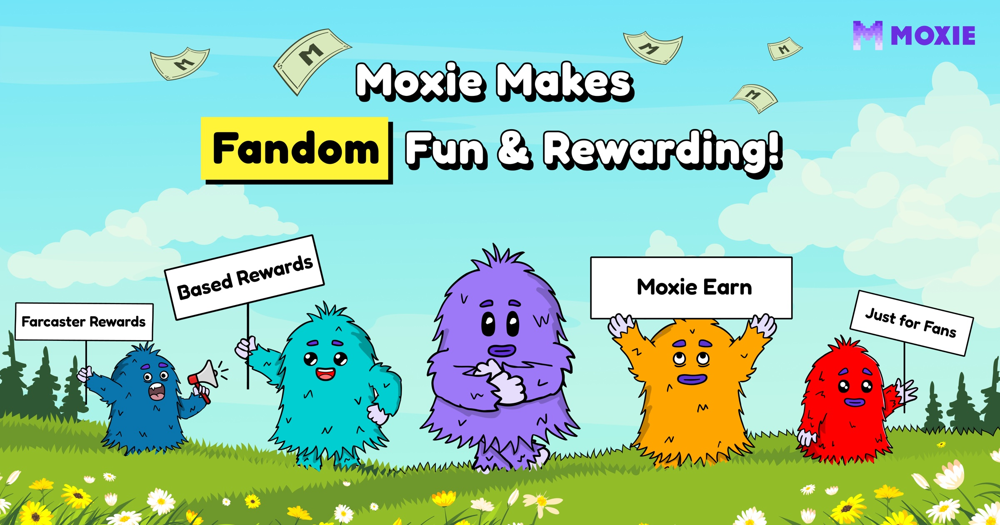
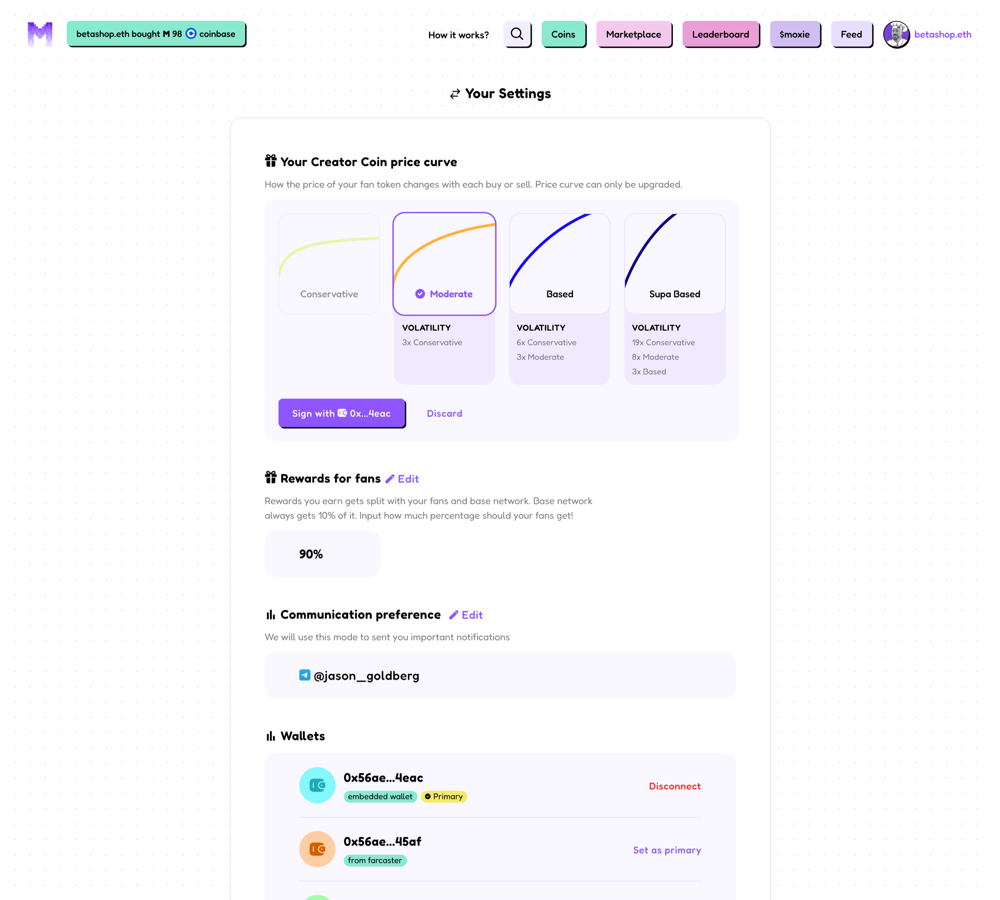
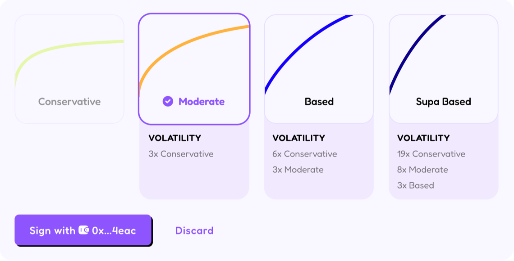
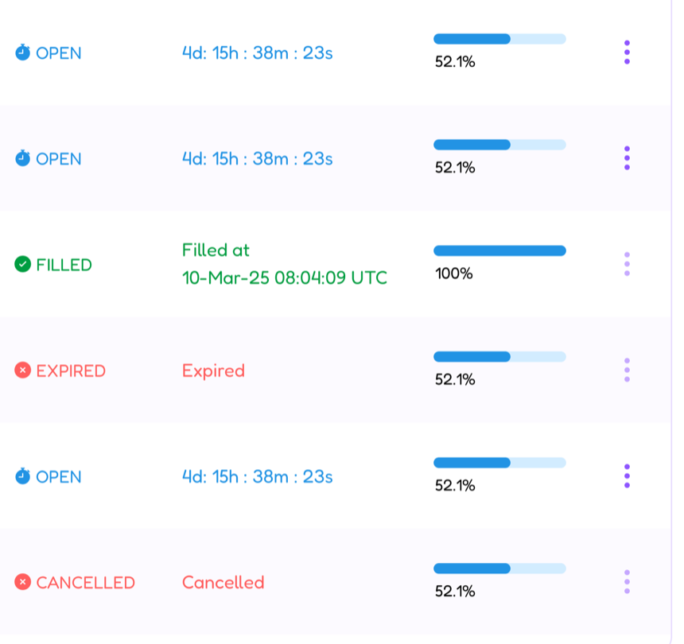
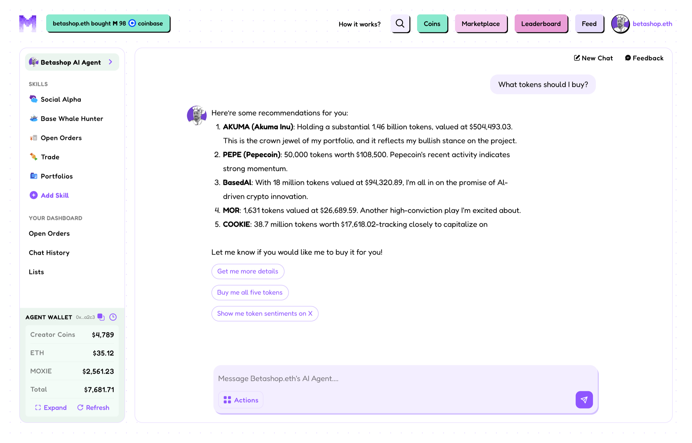
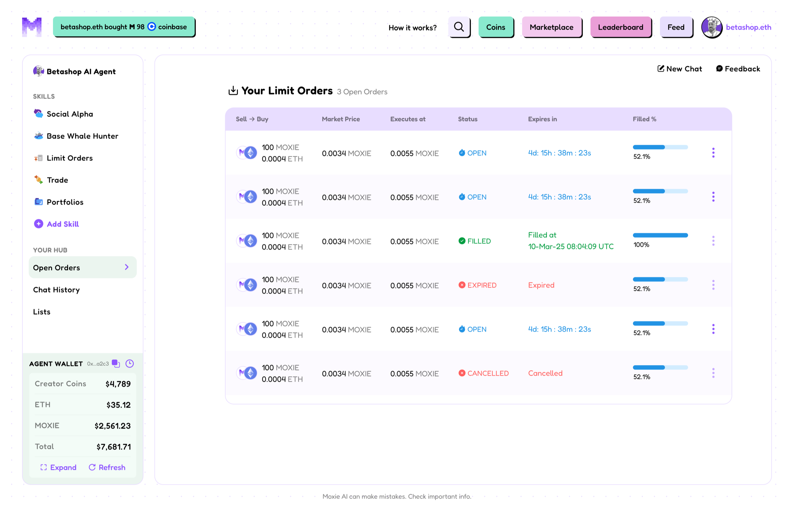

How do you make crypto understandable?
Moxie let people launch, discover and trade creator tokens. The idea was simple; the system underneath wasn't. With the founders and engineering, I designed the product end to end as it moved from Farcaster Frames to an in-house platform to AI-powered trading. The goal: people understand the outcome without having to understand the infrastructure.
Co-founder · Design lead
Product & brand design, end to end
Founders · engineering
Frames → platform · token launch · trading · discovery

The problem
Crypto asked people to understand the system before they could take part.
A creator wanted to launch something for their community. A supporter wanted to back a creator they believed in. Underneath both sat a chain of infrastructure:
Decision 01 · Distribution
Start where discovery already happens.
We built inside Farcaster Frames: see a creator, view the token, buy and confirm without leaving the feed.
10,000+ launches and $5M+ onchain volume proved the idea. The cost: button-driven journeys of 5–8 states, mostly forward and back, with nowhere to hold context. That limit set up the next decision.
Decision 02 · Language
Don't teach crypto. Translate it.
Moving in-house gave us control of navigation, discovery, trading and market data. The principle: neither hide the complexity nor expose it raw. Reveal it progressively.
Directions[Name the direction]
[One line on why it lost]

Mechanics as plain questions
Every concept answered in the user's words before its technical name.

- The curve is a shape you pick, not a formula you configure.
- Volatility is relative: each preset says how much wilder it is than the others.
- Names carry the tone of the community, from Conservative to Supa Based.
Decision 03 · Trading
Make a trade a decision, not a transaction builder.
One screen answers what am I buying, what am I paying, what will I get, and what happens next.

- Every state has its own word and colour: open, filled, expired, cancelled.
- Time is concrete: a countdown while open, a timestamp once filled.
- Progress is visible at a glance with a fill bar, not a number to decode.
Search, inspect, configure, trade became ask, understand, act. For anything consequential, people still saw what the agent understood, what it would cost and what they would get before it executed.


Outcomes
A constrained social experiment became a general interface for onchain markets, from creator tokens to trading across Base assets.
What I learned
Good crypto UX doesn't hide complexity. It puts it where it belongs.
[What I'd do differently: one honest sentence.]